請 用 滑 鼠 滑 動 下 方 地 圖 地 區，可 見 各 區 域 介 紹
大阪
#梅田 #心斎橋 #道頓堀 #難波 #中之島 #天滿橋 #日本橋 #天王寺

京都
#京都車站 #四條 #清水寺 #二條城 #金閣寺 #南禪寺 #嵐山 #宇治
兵庫
#三宮 #南京町 #北野異人館 #新神戸站 #姫路城 #有馬溫泉 #城崎溫泉 #明石

奈良
#東大寺 #正倉院 #藥師寺 #春日大社 #奈良公園 #佐保路 #法隆寺 #吉野
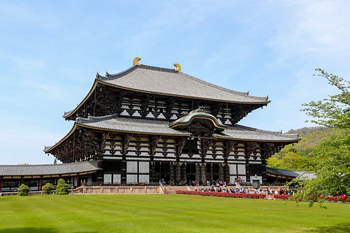和歌山
#高野山 #熊野三山 #白濱溫泉
三重
#伊勢 #伊勢神宮 #鳥羽溫泉 #志摩
滋賀
#琵琶湖 #大津 #甲賀 #近江 #彦根 #湖北 #湖西
東京
#淺草 #新宿 #銀座 #上野 #澀谷 #六本木 #台場 #秋葉原
神奈川
#横濱 #鎌倉 #江之島 #箱根 #小田原 #三浦半島 #橫須賀
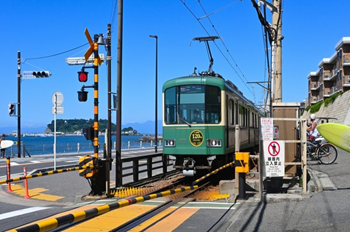櫪木
#日光 #中禪寺湖 #鬼怒川 #湯西川 #那須高原 #鹽原 #戰場原
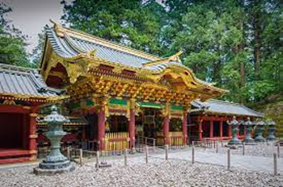群馬
#草津 #伊香保 #四萬 #榛名湖 #尾瀨原 #渡良瀨川 #富岡製絲場
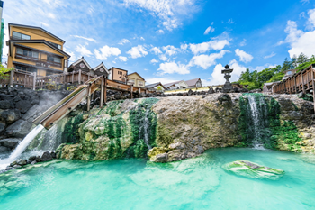千葉
#舞濱 #幕張 #成田 #館山 #木更津
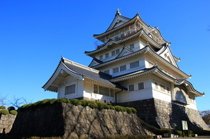埼玉
#小江戶 #川越 #埼玉 #秩父 #三峯神社
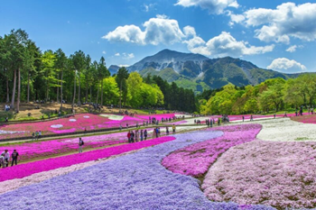茨城
#水戸 #牛久 #日立 #偕樂園 #牛久大佛 #鹿島神宮
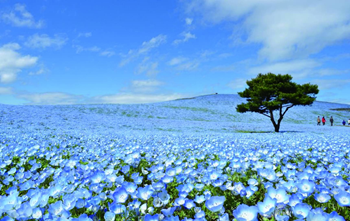札幌
#札幌市鐘表台 #北海道廳舊本廳舍 #大通公園 #札幌電視塔 #狸小路商店街 #中島公園
小樽
#小樽運河 #小樽市博物館 #運河廣場 #北一硝子三號館 #小樽八音鐘堂 #鯡魚御殿
函館
#函館朝市 #函館山展望台 #金森倉庫群 #舊函館區公會堂 #五稜郭遺蹟 #湯川溫泉 #大沼公園

富良野
#富田農場 #薰衣草園 #日出公園 #富良野奶酪工房 #富良野葡萄酒工房 #深山嶺展望台 #KANNO農場
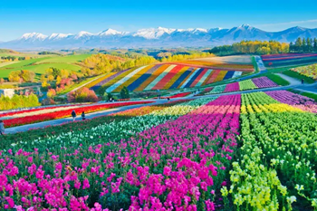美瑛
#美瑛車站 #四季情報館 #白樺街道 #親子樹 #斑馬之丘 #超廣角之路 #新榮丘展望公園
網走
#博物館網走監獄 #鄂霍茨克流冰館 #北方民族博物館 #小清水原生花園
青森
#弘前 #青森 #下北 #十和田 #白神山地 #十二湖 #奧入瀨溪流
山形
#村山 #銀山溫泉 #蔵王樹冰群 #花笠祭 #酒田祭 #米澤上杉祭
宮城
#仙台 #松島 #藏王 #鳴子 #石卷 #仙台城址 #藏王禦釜 #七夕祭 #秋保溫泉

岩手
#盛岡 #平泉 #一關 #八幡平 #安比高原 #毛越寺 #猊鼻溪 #小岩井農場 #花卷溫泉
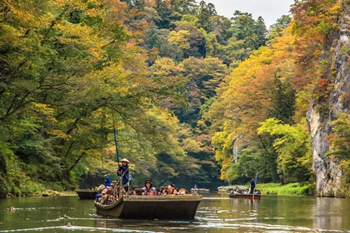秋田
#角館 #秋田 #田澤湖 #仙北 #湯澤 #超廣角之路 #竿燈祭
福島
#福島 #会津若松 #郡山 #磐城 #東山溫泉 #三春滝櫻 #阿武隈洞
静岡
#富士 #熱海 #伊豆高原 #城崎 #熱川 #稲取 #下田
山梨
#富士山 #富士五湖 #甲府 #石和・勝沼 #清里 #南阿爾卑斯山
愛知
#名古屋 #犬山 #常滑 #名古屋城 #東山動植物園 #榮町大街 #熱田神社

岐阜
#飛驒高山 #白川郷 #下呂 #郡上八幡 #飛驒高山 #高山陣屋 #岐阜城
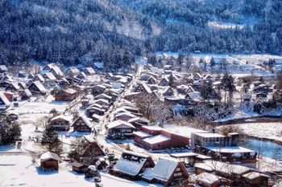長野
#長野 #松本 #輕井澤 #諏訪湖 #白馬 #上高地
石川
#金澤 #能登 #加賀 #白山 #兼六園 #金澤城 #東茶屋街
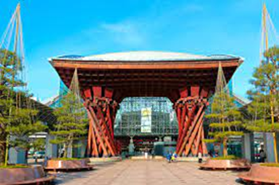新潟
#新潟 #越後湯澤 #月岡 #弥彦 #妙高 #佐渡 #弥彦神社 #苗場 #妙高高原
富山
#黒部 #富山 #五箇山 #高岡 #黑部峽山谷 #宇奈月溫泉 #五箇山合掌村落
福井
#福井 #東尋坊 #敦賀 #越前海岸 #永平寺 #平泉寺 #蘆原溫泉
廣島
#廣島 #宮島 #尾道 #島波海道 #和平公園 #原爆屋頂 #嚴島神社
岡山
#倉敷 #岡山 #高梁 #韮山高原 #岡山後樂園 #岡山城 #吉備津神社
鳥取
#鳥取 #米子 #境港 #大山 #倉吉 #三朝 #鳥取砂丘 #白兔海岸 #三朝溫泉

島根
#出雲 #松江 #石見 #安來 #出雲大社 #日御碕神社 #玉造溫泉 #美保神社
山口
#秋吉台 #松本 #岩國 #萩 #下関 #錦帯橋 #秋吉台 #秋芳洞 #湯田溫泉
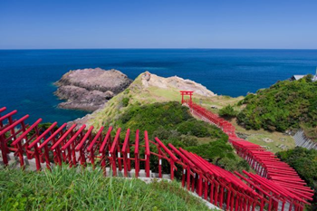愛媛
#松山 #今治 #新居濱 #內子 #宇和島 #道後溫泉 #島波海道
香川
#高松 #金刀比羅宮 #觀音寺 #小豆島 #栗林公園 #高松城

徳島
#徳島 #鳴門 #阿波 #劍山 #鳴門海峽旋渦潮 #奥祖谷蔓藤橋 #祖谷溪
高知
#高知 #四万十川 #室戸岬 #HIROME市場 #桂濱 #足摺岬 #四國熔岩地貌景區
福岡
#天神 #博多站 #中洲川端 #長濱屋台夜市 #太宰府
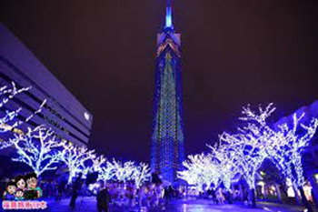佐賀
#佐賀 #有田 #伊万里 #嬉野 #武雄 #吉野里 #唐津 #鹿島
大分
#別府 #湯布院（由布院） #耶馬溪 #九重 #宇佐 #杵築城下町
熊本
#熊本 #阿蘇 #黒川 #杖立 #宇城 #天草 #熊本城 #通潤橋 #阿蘇山
鹿児島
#鹿児島 #櫻島 #知覽 #霧島 #指宿溫泉 #種子島 #屋久島 #奄美大島
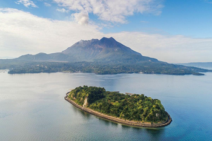宮崎
#宮崎 #高千穂峽 #日向 #美美津 #青島 #日南海岸 #鵜戶神宮 #飫肥城下町
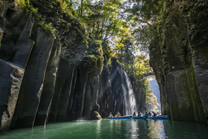長崎
#長崎 #佐世保 #平戸 #雲仙 #島原 #九十九島 #五島 #軍艦島
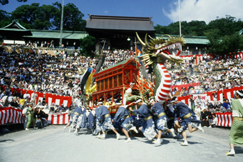沖繩
#那霸 #首里 #知念半島 #沖繩 #恩納村 #本部半島 #山原 #名護
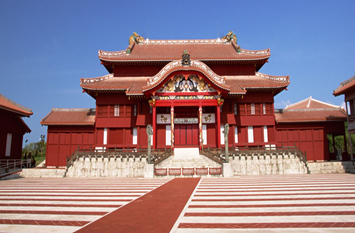